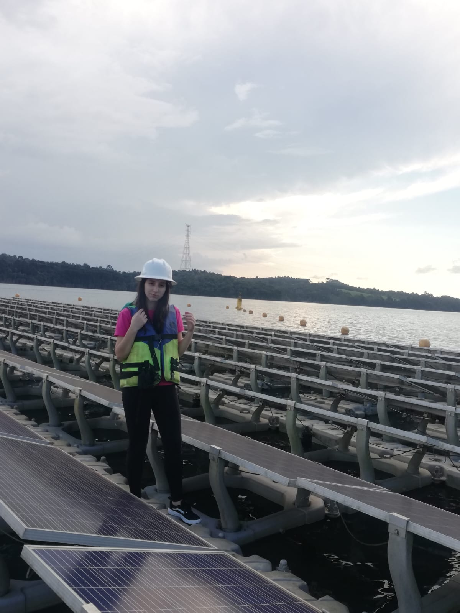

Karollyn Larissa de Quadros
Environmental Engineer

Master's Thesis Research
Applied research focusing on environmental modeling, data analysis, and hydrological resource management strategies.
Read More
Undergraduate Thesis
Practical application and environmental engineering methodologies focused on environmental diagnosis and quality assessment.
Read More
Undergraduate Research Projects
Scientific initiation and academic projects dedicated to monitoring and preserving ecological systems at UFPR.
Read More
Work at SIMEPAR
Participation in research and development projects, centering on environmental data analytics and scientific support.
Read MoreAbout Me

I am an Environmental Engineer with a degree from the Federal University of Paraná (UFPR) and a Master's candidate in the Graduate Program in Environmental Engineering (PPGEA-UFPR). My academic and professional journey is focused on applied research, environmental monitoring, data analysis, and sustainable resource management.
Currently, I serve as a graduate researcher at SIMEPAR, conducting studies directed at environmental management and impact assessment with a strong background in scientific modeling and engineering applications.
Education
M.Sc. in Environmental Engineering (In Progress)
Graduate Program in Environmental Engineering (PPGEA), Federal University of Paraná (UFPR).
Click for more details about the research
Partnership: Developed in collaboration with the Paraná State Technology and Environmental Monitoring System (SIMEPAR).
Thesis Title: Basin-Scale Evapotranspiration Estimation in Paraná Using Water Balance with Remote Sensing.
Methodology: My research focuses on estimating basin-scale evapotranspiration across Paraná. This is achieved by applying a water balance approach that combines measured data from hydrometeorological stations with terrestrial water storage data from the GRACE gravimetric satellite (downscaled).
Key Findings (Partial): Preliminary results show that this method produces evapotranspiration data much closer to measured values from evapo-stations compared to global models (such as MODIS 16), demonstrating a significantly better ability to capture local characteristics.
B.Sc. in Environmental Engineering
Federal University of Paraná (UFPR), Curitiba, Brazil.
Click for more details about the coursework & research
Core Focus: The curriculum was heavily focused on numerical modeling and hydrology.
Key Coursework: Included extensive training in hydrodynamic and hydrological models, along with comprehensive courses on hydroecology and atmospheric systems.
Research Experience (IC): Conducted several Scientific Initiation (IC) projects, including research on the effects of floating solar panels on lake hydrodynamics (using Delft3D) and climate variability impacts on precipitation (at the Meteorology Laboratory).
Experience
SIMEPAR
Curitiba, PR, Brazil
M.Sc. Scholarship Holder / Researcher
View Responsibilities
- Hydrological and environmental data analysis applied to operational monitoring systems.
- Development of a pilot project for landslide monitoring based on rainfall accumulation critical threshold curves.
- Preparation and organization of monthly technical reports.
- Direct communication with institutional clients.
- Support in the development of a drought status index for the state sanitation company.
- Support in the monthly operational generation of hydrological monitoring products for water supply sources.
SIMEPAR
Curitiba, PR, Brazil
Research Intern
View Responsibilities
- Statistical data analysis using the R programming language.
- Application of remote sensing data from GRACE missions for hydrological analysis.
- Support in hydrological and environmental monitoring activities.
Lactec
Curitiba, PR, Brazil
Intern
View Responsibilities
- Support in applied environmental and hydrological studies.
- Assistance in environmental data processing and validation.
- Contribution to technical documentation and project reports.
RHA Engenharia
Curitiba, PR, Brazil
Intern
View Responsibilities
- Support in environmental and hydrological consulting projects.
- Assistance in data consistency analysis and quality control of environmental datasets.
- Contribution to the preparation of monthly technical reports.
Publications & Conference Proceedings
Peer-reviewed Conference Papers
- de Quadros, K. L., Ferreira, E. M., Fernandes, C. V. S., Bleninger, T. B., & Bueno, R. C. (2023). Influence of Floating Photovoltaic Panels on Internal Wave Dynamics in Lakes and Reservoirs. Proceedings of the XXV Brazilian Symposium on Water Resources (SBRH), Brazil.
- de Quadros, K. L., Lima, M. F. D. S., Ferreira, D. M., Gonçalves, J. E., Mannich, M., Inouye, R. T., & Silveira, R. (2025). Bias Correction of Daily Precipitation Data from the WRF Model. Proceedings of the XXVI Brazilian Symposium on Water Resources (SBRH), Brazil.
Manuscripts in Preparation
- de Quadros, K. L., et al. Estimation of Evapotranspiration in River Basins of Southern Brazil Using Hydrological Balance and GRACE/GRACE-FO Data. Manuscript in preparation.
- de Quadros, K. L., et al. Rainfall Accumulation Thresholds for Landslide Early Warning Systems: A Case Study from the Serra do Mar, Brazil. Manuscript in preparation.
Technical Skills
- Programming: R, Python;
- Hydrological and statistical data analysis;
- Remote sensing applied to hydrology (GRACE / GRACE-FO);
- Numerical hydrodynamic modeling: Delft3D;
- Geospatial analysis: QGIS;
- Scientific writing: \LaTeX.
Languages
- Portuguese: Native
- English: Good reading, writing and speaking skills
- French: Intermediate reading and speaking skills
References
Available upon request.
🏆 Honors & Awards
Gold Medal - UFPR (2024)
First place in class at graduation ceremony.
Maximum Grade in Capstone Project - UFPR (2024)
Final Projects I & II.
Conference Award - SBRH (2023)
Floating Photovoltaic Panels Research.
Scientific Initiation Award - UFPR (2023)
Internal Waves Research.
Contact
Receive messages instantly with our PHP and Ajax contact form - available in the Pro Version only.
Karollyn Larissa de Quadros
Web Designer & Developer
123 Street, Los Angeles, CA, USA